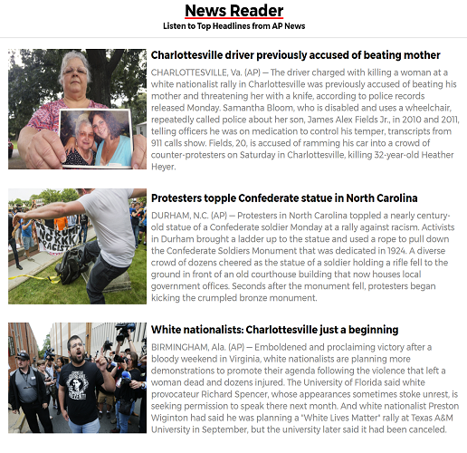

Never be the last to know.
Have you ever been the silent member of a group conversation? Was it because everyone was talking about current
events and you've had no time to read the news or watch it on TV?
Never have that problem again with the News Reader app.
Just listen to the most important headlines of the day along with a concise description of each, and you'll know what's going on
with our world without losing time in your busy schedule.

Key Features of this app:
- Hands-free listening of the latest national and international news headlines from the Associated Press.
Just open the app and you're all set.
- Headlines update throughout the day so you'll never be behind on breaking news.
- Each headline includes a concise description of the story read in a friendly, close-enough-to-human voice.
- If you hear something that really piques your interest, just click on the headline to get the full article.
- Headlines and descriptions are printed so you can read along as you listen to the stories.
- Conveniently works on desktop, tablet, and phone.
- Mobile-friendly, so anywhere your phone can go, this app can go.
News consumption problems this app fixes:
- You rush to get ready for work every morning. The TV is in the living room and you're in the bathroom brushing
your teeth, well out of earshot of any news program. Wouldn't it be nice if you could have something small,
say the size of an iPod, on your bathroom counter that had an app that tells you the news?
- The only free time you have in the morning is when you're out jogging, but you can't listen to the news since
all you have is the music on your phone and you're sick of listening to "Eye of the Tiger" on repeat.
Bet it would be pretty convenient to have a news app on your phone so you can exercise your knowledge of current
events as you exercise your core.
- You drive to work and don't have a Sirius XM account, so all you can get on the radio is the local news and the
latest Taylor Swift songs. If only there were an app that tells you what's going on around the country and the
world. It would probably make your commute feel a lot shorter.
- Time is money, and you love to multi-task. You want to be able feel productive while waiting in line at Starbucks
for your mocha latte with extra whipped cream. Too bad you don't have a news app on your tablet to enrich your mind
with the latest headlines so you have something interesting to break the ice with at your next client meeting.
Never be the silent member of a group conversation again. Know what's happening in the world and be able to talk about it
while you drink your mocha latte.
Always be the first to know. News Reader.